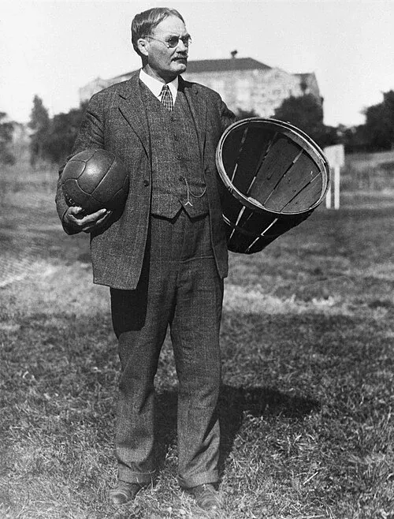

Tout ce que vous devez savoir sur l'histoire du basket

🏀 Brève histoire du basketball 1. La création du basketball en (1891) Le basketball a été inventé en 1891 par James Naismith, un professeur d’éducation physique canadien. Il travaillait à la Springfield College aux États-Unis. Pendant l’hiver, il cherchait un sport que ses étudiants pouvaient pratiquer à l’intérieur du gymnase. Son idée : accrocher deux paniers de pêches en hauteur utiliser un ballon de football marquer des points en lançant la balle dans le panier Le premier match de basketball a eu lieu le 21 décembre 1891 avec 13 règles simples. 2. La diffusion du sport (1900-1930) Le sport devient rapidement populaire dans les écoles et universités américaines. Les associations sportives de la Young Men's Christian Association (YMCA) contribuent beaucoup à diffuser le basketball dans le monde. Quelques évolutions importantes : Les paniers de pêches sont remplacés par des anneaux avec filet Le dribble est introduit dans le jeu Des équipes organisées apparaissent 3. La reconnaissance internationale Le basketball devient un sport mondial. Dates importantes : 1932 : création de la FIBA 1936 : le basketball devient sport olympique aux 1936 Summer Olympics 1950 : première Coupe du monde de basketball Le sport commence alors à se développer en Europe, en Amérique du Sud et en Afrique. Le basketball moderne Aujourd’hui, le basketball est l’un des sports les plus populaires du monde. La ligue la plus célèbre est la National Basketball Association (NBA), où ont joué des stars comme : Michael Jordan LeBron James Le jeu a beaucoup évolué : plus rapide et physique stratégies plus tactiques développement du tir à 3 points popularité mondiale grâce à la télévision et internet 1891 invention par James Naismith diffusion rapide dans les écoles 1936 sport olympique aujourd’hui : sport mondial très populaire